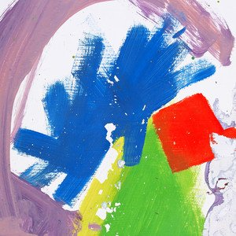

In the Spot-light
A few months ago I bought some "Yeelight" bulbs, a cheaper, versatile, Chinese alternative to many of the popular smart bulbs on the market. However because they're quite obscure, I've found that it can often be quite hard to integrate things with them. My Alexa doesn't even seem to recognise them as devices, but I can still use IFTTT to turn them on, change colours, "scenes" etc.
I wanted to see if I could get them to have more complex behaviour, and one thing I was really interested in trying was to get them to sync to my current playing song on Spotify.
I went about trying to do this, and found some code for developers on the Yeelight website that can do things like toggle lights on and off, change brightness...
def operate_on_bulb(idx, method, params):
'''
Operate on bulb; no gurantee of success.
Input data 'params' must be a compiled into one string.
E.g. params="1"; params="\"smooth\"", params="1,\"smooth\",80"
'''
if not bulb_idx2ip.has_key(idx):
print "error: invalid bulb idx"
return
bulb_ip=bulb_idx2ip[idx]
print(bulb_ip)
port=detected_bulbs[bulb_ip][5]
try:
tcp_socket = socket.socket(socket.AF_INET, socket.SOCK_STREAM)
print "connect ",bulb_ip, port ,"..."
tcp_socket.connect((bulb_ip, int(port)))
msg="{\"id\":" + str(next_cmd_id()) + ",\"method\":\""
msg += method + "\",\"params\":[" + params + "]}\r\n"
tcp_socket.send(msg)
tcp_socket.close()
except Exception as e:
print "Unexpected error:", e
The code uses this operate_on_bulb function, and needs to be sent with my computer on the same Wifi network that my bulbs are connected to. When you run the code you are able to list the available bulbs that you are connected to, and each bulb receives an index starting at 1. A function is given that uses this operate_on_bulb function that can change the brightness of lights:
def set_bright(idx, bright):
operate_on_bulb(idx, "set_bright", str(bright))
So for example I can use set_bright(1, 50) to change the bulb with 1st index to 50% brightness. With some reading of the "Yeelight WiFi Light Inter-Operation Specification" (say that 5 times fast) I figured out that with some minor tweaking you can get the code to change bulb colour. The colour must be passed in decimal format, so this can be translated from the more readable hex code representation rather easily using Python's native int function.
My function for changing colour is below (forgive the American-English):
def set_color(idx, rgb):
rgb = int(rgb, 16)
operate_on_bulb(idx, "set_rgb", str(rgb))
So if I wanted to change the colour of the 1st indexed bulb to pure red, i.e. "#ff0000", I can call set_color(1, "ff0000"). The hex code "ff0000" will be translated to the integer int("ff0000", 16) -> 16711680, which will then be sent over as a string.
The Spotify Problem
Now that I had this working I wanted to turn my attention to getting the current song on Spotify, because if that wasn't feasible then the whole project would fall down. I looked at the api for a while and found nothing that would be appropriate, especially with rate limiting getting in the way.
However seeing as my code would need to be running on my computer anyway, and the Spotify client updates the current playing song on all devices at the same time, there is an easier way.
I found someone on askubuntu asking about how to get the current playing song on spotify using the command line (given that the Spotify client is currently open on the same computer). The following command was given and this only gets the current song title:
dbus-send --print-reply --dest=org.mpris.MediaPlayer2.spotify /org/mpris/MediaPlayer2 org.freedesktop.DBus.Properties.Get string:org.mpris.MediaPlayer2.Player string:Metadata | sed -n '/title/{n;p}' | cut -d '"' -f 2
However with a bit more investigation of what this command is doing, you're able to get a lot more information by taking out some of these commands. If we reduce the command to:
dbus-send --print-reply --dest=org.mpris.MediaPlayer2.spotify /org/mpris/MediaPlayer2 org.freedesktop.DBus.Properties.Get string:org.mpris.MediaPlayer2.Player string:Metadata
Then out comes a bunch more information about the current playing song:
method return time=1549364930.028762 sender=:1.149 -> destination=:1.1121207 serial=1122063 reply_serial=2
variant array [
dict entry(
string "mpris:trackid"
variant string "spotify:track:60AEGzxRNUQ3Pzg4tygzJC"
)
dict entry(
string "mpris:length"
variant uint64 319000000
)
dict entry(
string "mpris:artUrl"
variant string "https://open.spotify.com/image/50d898136e5150ce32cb88d7d48824c8d59f3c89"
)
dict entry(
string "xesam:album"
variant string "This Is All Yours"
)
dict entry(
string "xesam:albumArtist"
variant array [
string "alt-J"
]
)
dict entry(
string "xesam:artist"
variant array [
string "alt-J"
]
)
dict entry(
string "xesam:autoRating"
variant double 0.45
)
dict entry(
string "xesam:discNumber"
variant int32 1
)
dict entry(
string "xesam:title"
variant string "Bloodflood, Pt. II"
)
dict entry(
string "xesam:trackNumber"
variant int32 12
)
dict entry(
string "xesam:url"
variant string "https://open.spotify.com/track/60AEGzxRNUQ3Pzg4tygzJC"
)
]
And one of the things we can see here is the url for the album art - perfect! This has now solved what was to be the next problem, so we now skip to extracting dominant colours from an image:
Extracting Colour
I originally thought extracting dominant, salient colours from an images that are also aethestically pleasing would be a fairly easy task, or that there would at least be a convenient Python library or one-liner that could do this for me. I was wrong.
This is a rather ill-posed problem, with an input that can range wildly. There are also edge cases such as: what do you do when posed with album art that is totally black and white? (which it turns out, there is a lot of...)
In the end, after reading a number of webpages about Colour Theory and tearing my hair out, I decided to settle for a k-means based approach which clusters image colours based on pixel rgb "coordinates".
pixels = numpy.array([pixels[i * width:(i + 1) * width] for i in xrange(height)])
#make image list of "interesting" (non-grey) pixels
def interesting_pixel(pixel):
#pixel is too grey
too_grey = max(pixel) - min(pixel) < 70
#pixel is too white
too_white = min(pixel) > 180
#pixel is too black
too_black = max(pixel) < 70
return not(too_grey or too_white or too_black)
pixels = pixels.reshape((pixels.shape[0] * pixels.shape[1], 3))
pixels = [pixel for pixel in pixels if interesting_pixel(pixel)]
My code first rips all the pixels out the images and throws them into a list, after filtering them to make sure they are "interesting". I'm not interested in grey, black or white pixels (or those that are visually similar) so I defined a metric that plays with this concept.
I then used the KMeans algorithm available in sklearn.cluster to, well... cluster the pixels. The centroids are then used as the "dominant colours" as these are the mean of the cluster. I have two yeelights that are capable of displaying colour, so I thought it would be nice to get the "top two" colours, and then display one on each light.
The results of this work quite well:

However this obviously works best with images with bold colour schemes, as I've demonstrated above.
I think my method of extracting colours could still do with some tweaking. For example, I could look at colours that work well together in the artwork. In the album art for "Melodrama" by Lorde, my program gets a light and a dark blue. Whereas a dark blue and the warm skin tone colour could be used instead that would possibly be a more visually pleasing / representative combination.
I've also thought about the use of another colour space, as perhaps RGB isn't too appropriate. The standard sklearn KMeans will assume a euclidean distance measure, but something like Manhattan distance could also work better with RGB, as I've been assuming RGB "coordinates".
As well, the method I've used doesn't really do much with album art that is totally black and white. In this case I've currently got it so that the program does nothing when you play a song with black and white album art (a line makes sure that if you strip out all "uninteresting" pixels leaving nothing left, the program breaks before running KMeans on an empty list). Perhaps in the future I might make it change the lights to a random choice from a selection of colours that work well.
However I feel as though what I have so far works well enough, and certainly makes for some interesting mood lighting.